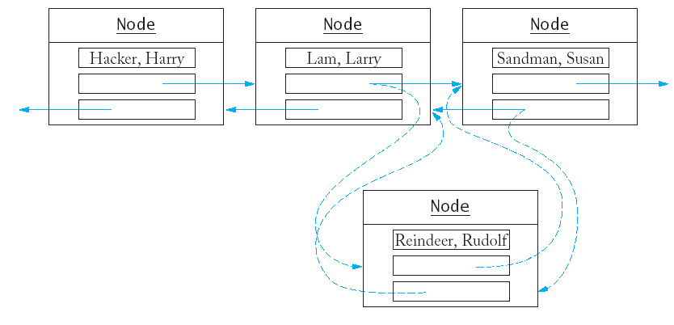
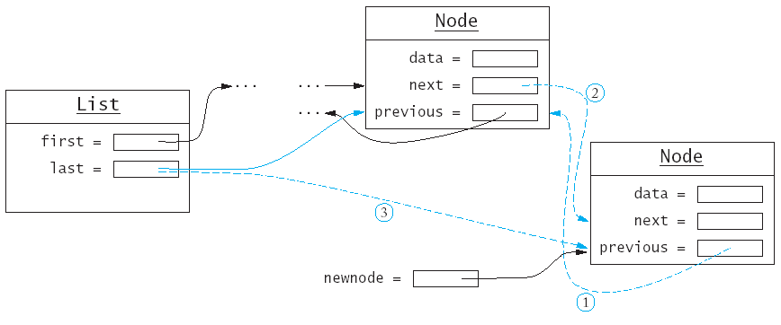

class Node {
public:
Node(string s);
private:
string data;
Node* previous;
Node* next;
friend class List;
friend class Iterator;
};
class List {
public:
List();
void push_back(string s);
void insert(Iterator pos, string s);
Iterator erase(Iterator pos);
Iterator begin();
Iterator end();
private:
Node* first;
Node* last;
};
class Iterator {
public:
Iterator();
string get() const; /* use instead of * */
void next(); /* use instead of ++ */
void previous(); /* use instead of -- */
bool equals(Iterator b) const; /* use instead of == */
private:
Node* position;
Node* last;
friend class List;
};
Iterator List::begin() {
Iterator iter;
iter.position = first;
iter.last = last;
return iter;
}
Iterator List::end() {
Iterator iter;
iter.position = NULL;
iter.last = last;
return iter;
}
void Iterator::next()
{ assert(position != NULL)
position = position->next;
}
void Iterator::previous()
{ if (position == NULL) position = last;
else position = position->previous;
assert(position != NULL);
}
string Iterator::get() const
{ assert(position != NULL);
return position->data;
}
bool Iterator::equals(Iterator b) const
{ return position == b.position; }
Node* newnode = new Node(s);
newnode->previous = last; // (1)
last->next = newnode; // (2)
last = newnode; // (3) !
if (last == NULL)
{ first = newnode;
last = newnode;
}
void List::push_back(string s)
{ Node* newnode = new Node(s);
if (last == NULL) /* list is empty */
{ first = newnode;
last = newnode;
}
else
{ newnode->previous = last;
last->next = newnode;
last = newnode;
}
}

if (iter.position == NULL)
{ push_back(s);
return;
}
Node* after = iter.position;
Node* before = after->previous;
newnode->previous = before; // (1)
newnode->next = after; // (2)
after->previous = newnode; // (3)
if (before == NULL) /* insert at beginning */
first = newnode;
else
before->next = newnode; // (4)
Of course we cannot remove a node that is not there.
assert(iter.position != NULL)
We create pointers to track all three nodes we need
to work with.
Node* remove = iter.position;
Node* before = remove->previous;
Node* after = remove->next;
We disconnect the node to be removed from the one
before it; note the special case when we delete from the front of the
list.
if (remove == first) first = after;
else before->next = after;
We repeat the process with the node after the one to
delete.
if (remove == last) last = before;
else after->previous = before;
Finally we delete the node.
delete remove;